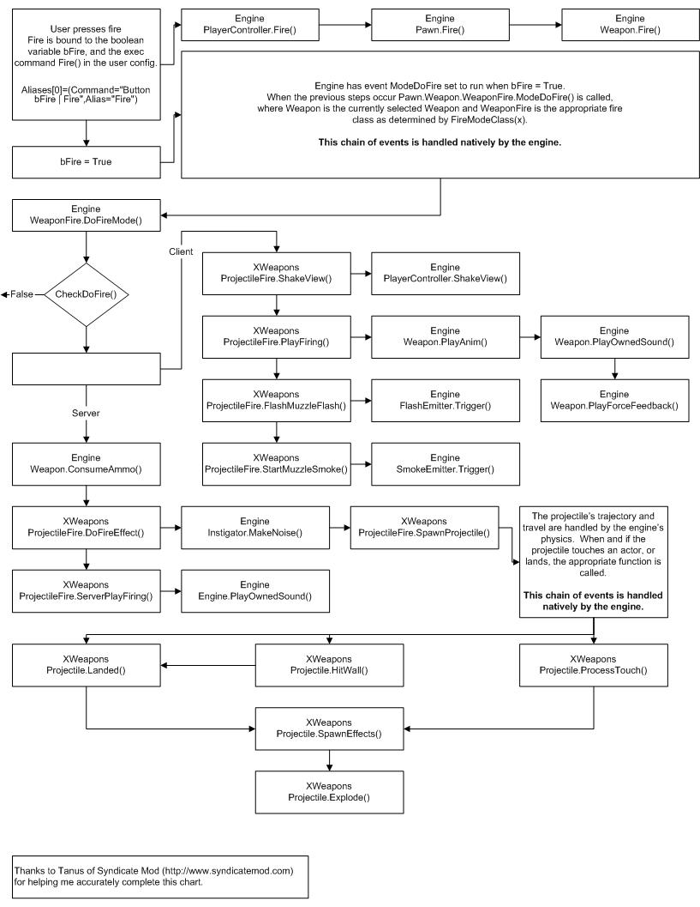

How UT2003 Weapons Work/Firing A Weapon
How UT2003 Weapons Work: Firing A Weapon
Intro
While it's relatively easy to make a custom weapon by taking an existing one and monkeying about with the parameters, it's much harder to figure out the chain of events that cause a weapon to get fired. The reason for this is twofold: first, much of the actual flow of control is done natively, so is not visible to the person browsing the UnrealScript code; secondly, there is a visible chain of method calls which looks right, until the trail suddenly peters out.
Trystan did excellent work deciphering this in the case of projectile weapons. Although not originally intended to show the general case, this diagram shows important steps missing from the visible UnrealScript code:
Flow of control

Projectile Fire Flowchart |
Note: There's a small error above. The ProcessTouch function isn't called by the engine. Instead the engine calls the Touch function which calculates the exact hitlocation and calls ProcessTouch.
In English
The player hits the Fire button. The engine then executes the alias attached to Fire. The alias fire is set to Button bFire, and the exec command Fire(). Check aliases for more information on how this works but basically bFire is a boolean variable that is automatically set by the engine to true when the fire button is being held down, and false when the fire button is released. The engine has a native event set such that when bFire is held down the Pawn.Weapons.WeaponFire.ModeDoFire() is called. As well PlayerController.Fire() is called. It's important to note that these are two distinctly separate chains of events.
See How Firing Doesn't Work for an explanation of the "decoy" chain of events.
The flow of control is picked up at the WeaponFire (UT2003) class found in the weapon's array of fire modes.
WeaponFire (UT2003) is responsible for creating the visual effects and applying damage. There are two main weapon fire types:
We will go on with the instant fire weapons; So, click that link! 
Comments
CDeath: This is my first Wiki post. My appoligies for any improper formatting.
I have been looking at the engine. I think I understand how the UT2K4 firing stuff works. Natively, what happens is that the engine calls the native TickAuthoritiative() function for every actor. For weapons, this native function is called AWeapon::TickAuthoritative().
AWeapon::TickAuthoritative() does several test to make sure that the weapon should be ticked, is owned by a pawn, and stuff like that. If everything looks good, then the native AWeapon::eventWeaponTick() is called. eventWeaponTick() calls the uScript Weapon.WeaponTick() function.
Next, AWeapon::TickAuthoritative() loops through the weapon’s FireMode array (each FireMode is a WeaponFire (UT2003) object) and depending on a lot of flags will call some of the following functions:
- UWeaponFire::ModeTick() (a native function)
- AWeapon::eventServerStartFire() (calls uScript Weapon.ServerStartFire())
- AWeapon::eventServerStopFire() (calls uScript Weapon.ServerStopFire())
- AWeapon::eventClientStartFire() (calls uScript Weapon.ClientStartFire())
- AWeapon::eventClientStopFire() (calls uScript Weapon.ClientStopFire())
The native UWeaponFire::ModeTick() function calls UWeaponFire::eventTimer() (which calls the uScript WeaponFire (UT2003).Timer() function). Then based on a lot of flags it will call some of the following functions:
- UWeaponFire::eventModeTick() (calls uScript WeaponFire (UT2003).ModeTick())
- UWeaponFire::eventModeDoFire() (calls uScript WeaponFire (UT2003).ModeDoFire())
- UWeaponFire::eventModeHoldFire() (calls uScript WeaponFire (UT2003).ModeHoldFire())
So for a weapon, it looks like the sequence is:
- Weapon.WeaponTick();
- Weapon.FireMode[0].Timer()
- Weapon.FireMode[0].ModeTick()
- Weapon.FireMode[0].ModeDoFire()/ModeHoldFire()
- Weapon.FireMode[1].Timer()
- Weapon.FireMode[1].ModeTick()
- Weapon.FireMode[1].ModeDoFire()/ModeHoldFire()
- Weapon.ServerStartFire()/ServerStopFire()
- Weapon.ClientStartFire()/ClientStopFire()
What exactly gets called depends upon all sorts of things like your Role, TimerInterval, NextTimerPop, TimeSeconds, bIsFiring, bInstantStop, bFireOnRelease, HoldTime, MaxHoldTime, NextFireTime…
Wormbo: Thanks for the insights. I'd like to add, that the native UWeaponFire class corresponds to the WeaponFire (UT2003) Unrealscript class and AWeapon corresponds to UnrealScript's Weapon class. It's kinda obvious, but just to prevent confusion...
CDeath: Good catch. I changed AWeapon to Weapon. Internally, the engine prepends most native objects with either an 'A' or a 'U'. The 'A' means that the object descends from Actor.
Sweavo: refactored some, it still has a way to go, but that diagram was the Holy Grail for me, and I agree with other contributors it needs to be front and center!
Tarquin: If you want to do an editable version of the diagram, tree markup might be useful:
User fires weapon +- this happens | +- and then this +- that happens too